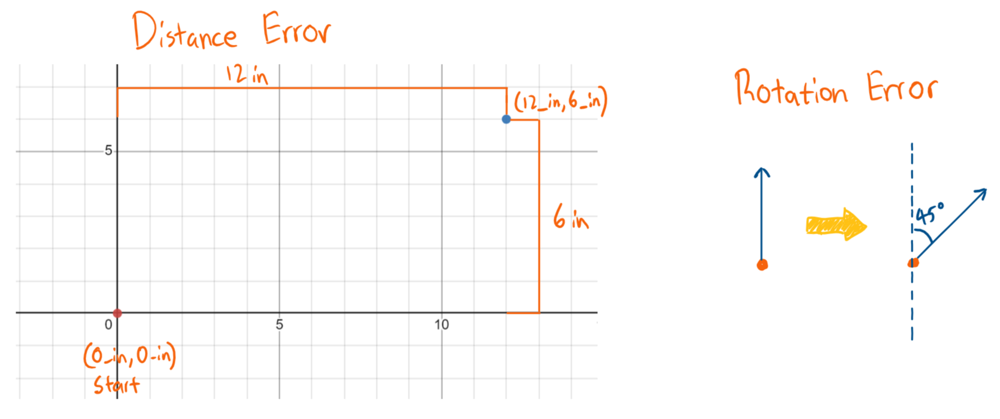
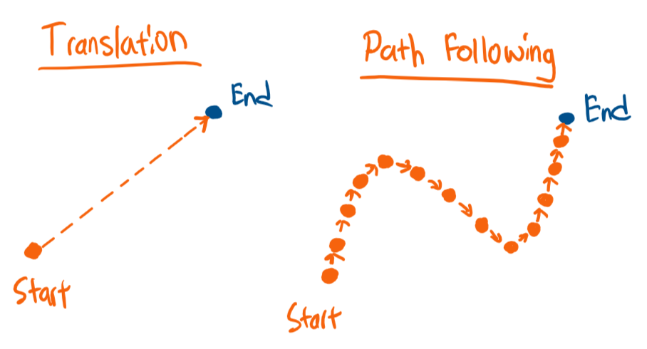

Explanation: Holonomic Translation & Path Following¶
Before we get started, there are a few concepts you should understand:
Translation¶
Suppose you want to move from \((0 in, 0 in, 0 deg)\) to \((12 in, 6 in, 45 deg)\). First, you need to calculate the X translation, y translation, and rotation error (if you do not understand what error is, check out the PID guide). You can easily calculate the error by finding the difference between the current and desired position.
{kind=link}
Finally, plug the error into your PID controller and use the output in your field-oriented control function.
Here is how I would do it for this scenario:
1void opcontrol() {
2 // Current location: (0_in, 0_in, 0_deg)
3 double currentX = 0;
4 double currentY = 0;
5 double currentTheta = 0;
6
7 // Desired location: (12_in, 6_in, 45_deg)
8 double desiredX = 12;
9 double desiredY = 6;
10 double desiredTheta = 45;
11
12 // Sets PID controllers
13 X_PID_CONTROLLER.setSetpoint(desiredX);
14 Y_PID_CONTROLLER.setSetpoint(desiredY);
15 THETA_PID_CONTROLLER.setSetpoint(desiredTheta);
16
17 while(true) {
18 // Update current position
19 currentX = ODOMETRY.getX();
20 currentY = ODOMETRY.getY();
21 currentTheta = ODOMETRY.getTheta();
22
23 // Calculate desired output by comparing current and desired position
24 double x = X_PID_CONTROLLER_NAME.update(currentX);
25 double y = Y_PID_CONTROLLER_NAME.update(currentY);
26 double theta = THETA_PID_CONTROLLER_NAME.update(currentTheta);
27
28 // Plug desired output into field-oriented control to move the chassis
29 CONTROLLER->fieldOrientedXArcade(x, y, theta);
30
31 delay(10);
32 }
33}
Path Following¶
Path following is very similar to translation. But instead of telling the robot to go to one position, you constantly tell the robot to travel to points along the path.
{kind=link}
When you create a path in Pathplanner, the software generates numerous points along the path and outputs it to a CSV file. You then need to convert the points in the CSV file to an array or something similar which the robot can understand (HolonomicLib uses a custom Python script to convert the information in the CSV file to a Trajectory object). Finally, to follow the path, continuously tell the chassis to travel to the next point along the path until it terminates.